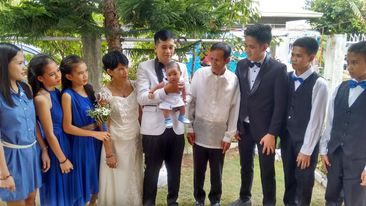
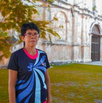
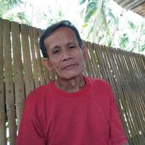
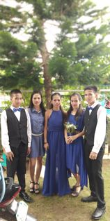

"Family is where life begins and love never ends."

I'd like you to meet my family,We were so happy at that time because we're complete.I can't forget that moment because it was my brother's wedding.As we go through life's ups and downs, I'm reminded of how fortunate I am to have such an amazing family. Eventhough my Papa Passed away last 2021,His memory will live on through his unwavering commitment to his family and his enduring legacy of hard work and perseverance.Thank you for being such an important part of my life. and I am proud to call you my family.
THESE ARE MY PARENTS

My mother, Beatriz Egam This is my mom, Beatriz, who is the kindest person I know and always puts others before herself. Your love, support, and guidance have been incredibly valuable and I feel very lucky to have you as my mother. I appreciate the sacrifices you've made for me and your unwavering belief in me, even during difficult times. You've taught me so much about life and love, and I feel blessed to have you as my parent.

My father, Isaias EgamThis is my Father, who is a hard worker and always encourages us to pursue our dreams."My father was a hardworking and dedicated man who always put his family first. He worked tirelessly to provide for us, often putting in long hours and making sacrifices to ensure that we had everything we needed.
THE SIBLINGS

This is my siblings. We are a family of 7 siblings, including me. I'm the youngest in the family.
Meet Alvin, our oldest sibling. He is a natural-born leader and always looks out for the rest of us.
This is Albert, our second oldest sibling. He is responsible and reliable, and we all turn to him for guidance.
Say hello to Juvy, our third sibling. She has a kind and compassionate heart, and she is always there to offer support when we need it.
This is Rey, our fourth sibling. He is adventurous and always up for trying new things, and he brings excitement to our family.
Meet Joan, our fifth sibling. She is patient and understanding, and she has a calming presence that we all appreciate.
Say hello to Judy, our sixth sibling. She is creative and imaginative, and she adds a unique and vibrant energy to our family.
Finally,i am the youngest sibling. Full of energy and enthusiasm, and reminds us to stay young at heart and enjoy the simple things in life..